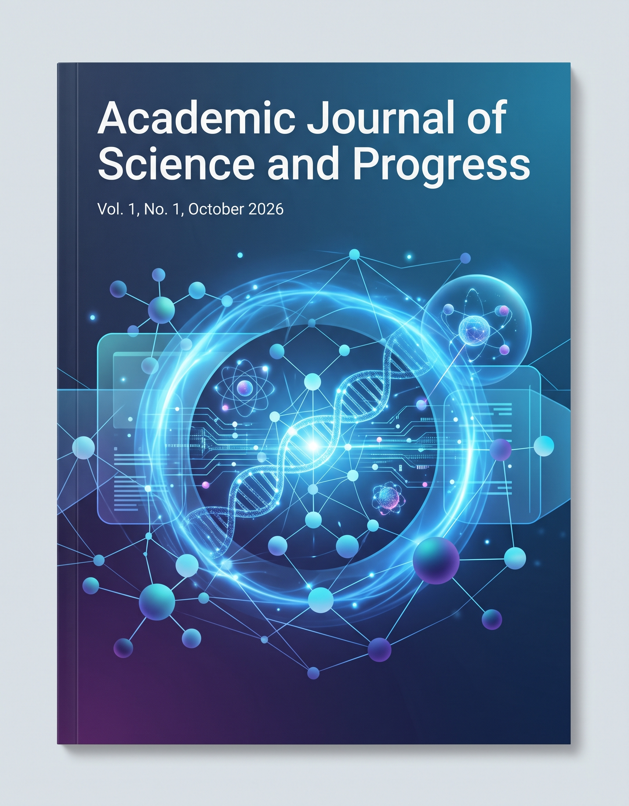

Oktabr 2026 — 1-son
Academic Journal of Science and Progress ilmiy jurnalining navbatdagi soni zamonaviy ilmiy yo'nalishlardagi tadqiqotlarni o'z ichiga oladi.
EVALUATION OF THE IMPACT OF CHANNEL DEFORMATIONS ON THE RELIABILITY OF OBSERVATION DATA AT THE QIPCHOQ GAUGING STATION
DOI: 10.5281/zenodo.ajsp.2026.10.01